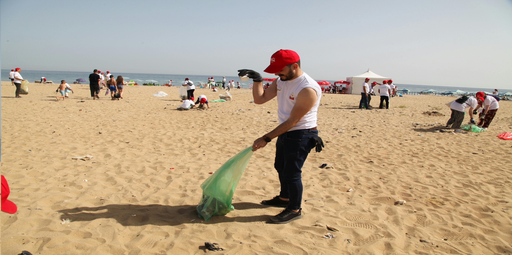
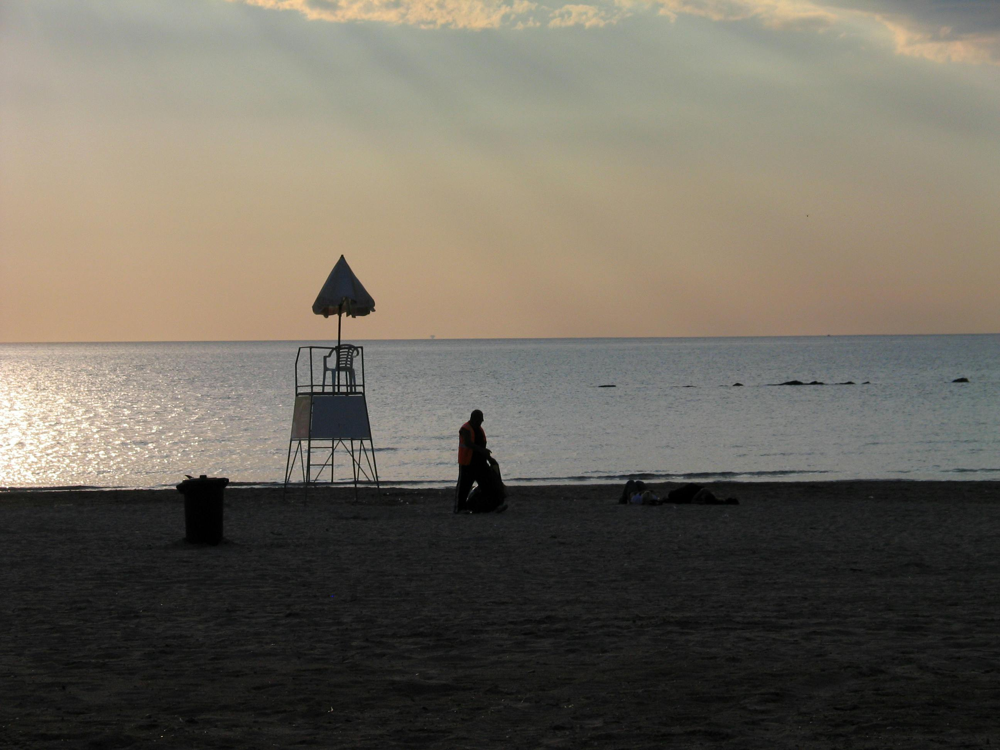

GLOBAL INITIATIVES AND POLICIES
With the ocean under constant threat of pollution, overfishing and climate change. Hundreds of organizations have dedicated themselves to tackle the human races neglect of its oceans and provide a better life of both the ocean and its inhabitants aswell as the people who thrive off of it.




They are an organisation founded in 2001 that is dedicated to creating policies within both coastal countries and the EU to protect and rebuild biodiverse parts of the ocean. Since Oceanas' founding, they have saved 4 million square miles of ocean from destruction. They heavily disagree with single use plastic, poorly labeled fish that causes sickness and the slow acidification of the ocean. Other achievements include protecting dusky sharks, banned industrial activity in protected areas of Canadian Waters and created the second largest marine park in spain. You can learn more at the link belowOceana's Site
Founded in 1978, they focus primarily focus on cleaning oceans and protecting them from both pollution and climate change. They are primarily a UK charity ,however, they opperate in British overseas territories like the falklands. They engage in two notable campaigns, the first being "beachwalk" a volunteer beach cleaning program that has been running for 25 years. Another is the "Good Fish Guide," an educational resource created to instruct and inform how to consume fish that are safe to eat in a clean and sanitary way to prevent sickness. A link to their website is below.
MCS's Site
MCS's Site
Founded in 1989 and situated in the UK, the US and Australia. The PADI AWARE organisation was set up to encourage both ordinary people and divers to clean both beaches and the ocean floor itself of plastic debris poisons the ocean and its inhabitants. They also educate divers of all experiance types and buisnesses dedicated to diving on how to ensure that the diving industry remains sustainable and safe for the ocean. Other problems they aim to solve include sea creatures being trapped in nets and debris and also protecting the hunting of shark. So far, within their 36 years of operation, they have removed 2 millions bits of debris from the ocean, educated 1 million divers and saved 1,585 entangled marine creatures and helped ban the hunting of vunrable species like the MAKO Shark in 2021. You can find more info on their website here.
PADI AWARE's website
PADI AWARE's website